Quickstart¶
Download¶
You can download Wizard from the official website
Installation¶
Wizard installation is guided by a simple setup UI, first it will download the installation files.

The download could take several minutes, depending on your internet connection
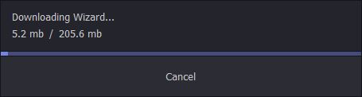{kind=link}
The next step is to choose your installation directory, we recommend to let “C:/Program files(x86)”
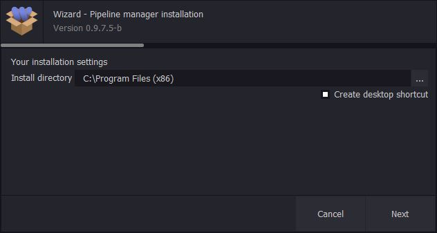{kind=link}
Then you’ll have to wait for one or two minutes while wizard is extracting the files, creating the desktop shortcut and adding the windows registery keys
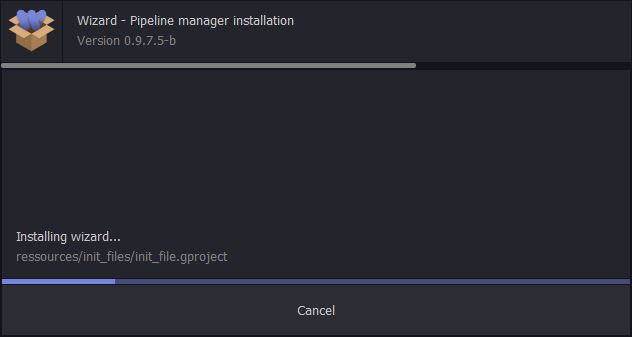{kind=link}
You’re done, enjoy !
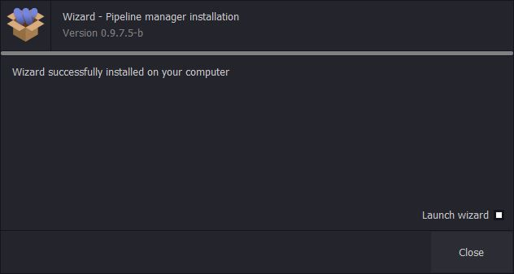{kind=link}
Uninstallation¶
To uninstall wizard you can find the uninstallation command in the windows “Add or remove programs” pannel.
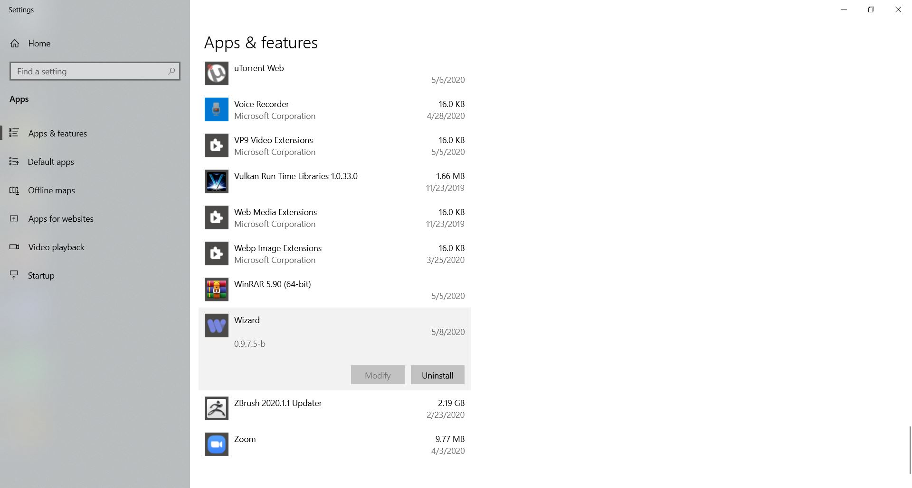{kind=link}
It launch a quick uninstaller, you can choose to repair the current version of wizard or uninstall it.
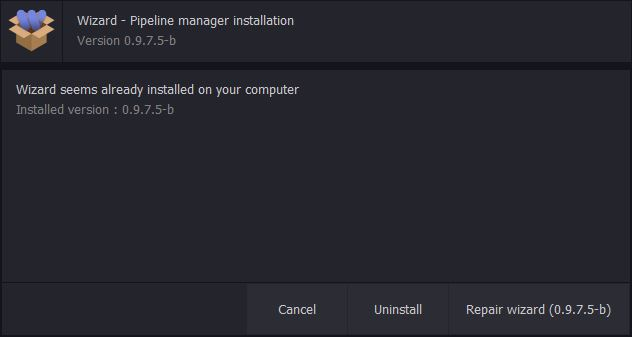{kind=link}
Create a site¶
First of all, wizard will ask you to create a “site”. It is a folder where wizard will store projects and users informations. If you plan to work in team, you have to set the site in a shared drive, else, the path doesn’t matter. We recommend to never touch manually this folder.
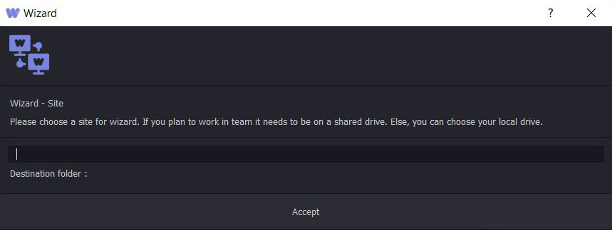{kind=link}
Danger
Modifying files in this directory without a full knowledge can corrupt all the projects stored in wizard. It is strongly recommended to never touch files in this directory !
Create a user¶
You need a user profile to use wizard. It permits to store you email ( only on local drive, we don’t store emails on a website ), some work history, messages, tickets, and works.
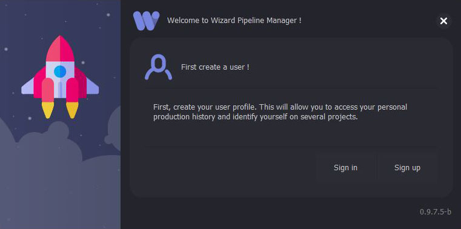{kind=link}
If you are TD you can first use the “admin” profile, the password is “administrator”.
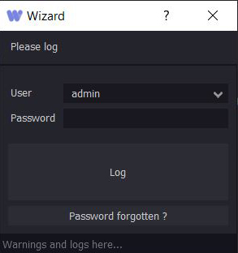{kind=link}
Note
We recommand to change the admin password after the first connection to limit access to this user profile
If you create a user, you will need to fill theses informations :
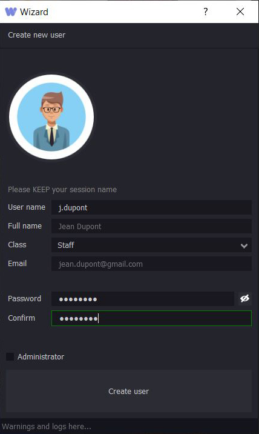{kind=link}
Then you will need to confirm your email, you will receive a code on your email, enter it in the next field :
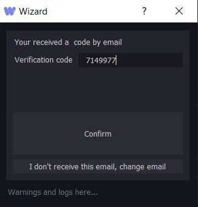{kind=link}
Congrats, you have created a user !